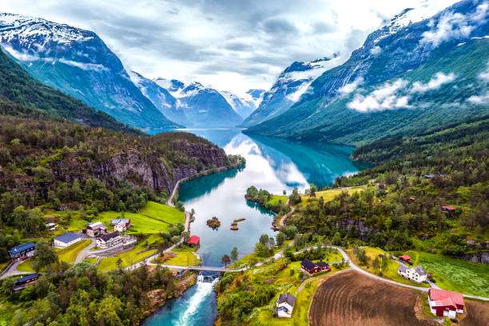
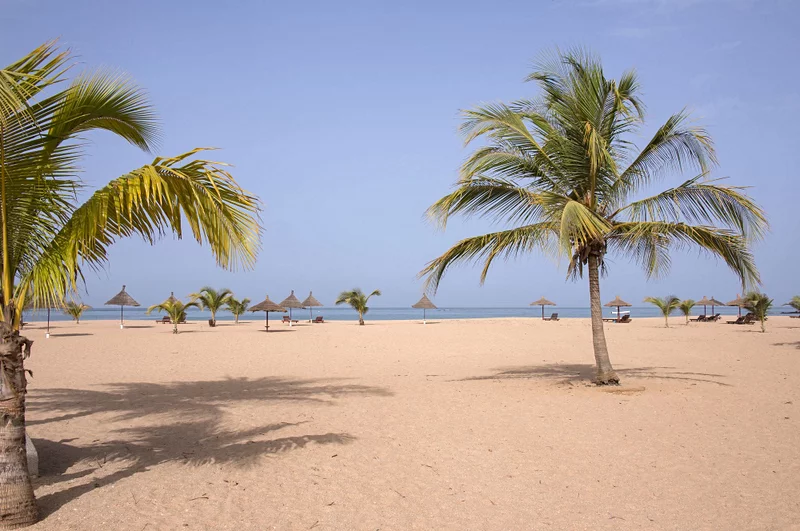

Maroc

Découvrez les merveilles du Maroc, des souks animés de Marrakech aux dunes du désert du Sahara.
Turquie

Explorez la riche histoire et la culture de la Turquie, des mosquées d'Istanbul aux plages de la côte égéenne.
Malaisie
Plongez dans la diversité de la Malaisie, des gratte-ciels de Kuala Lumpur aux forêts tropicales de Bornéo.
Norvège
Admirez les paysages époustouflants de la Norvège, des fjords majestueux aux aurores boréales scintillantes.
Tunisie

Découvrez la Tunisie, des ruines antiques de Carthage aux plages ensoleillées de la Méditerranée.
Sénégal
Explorez le Sénégal, des marchés colorés de Dakar aux plages de sable fin de Saly.